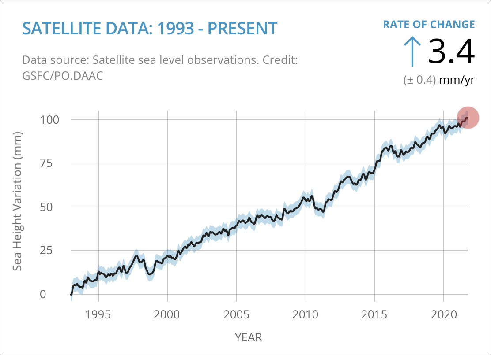

Evaporation.
Water from oceans, rivers, lakes, and the Earth's surface is heated by the sun and turns into water vapor, rising into the atmosphere As water vapor rises, it cools and condenses into tiny water droplets, forming clouds. When cloud droplets combine and become too heavy, they fall to the Earth's surface as precipitation, which can be rain, snow, sleet, or hail.
Runoff.
Precipitation that doesn't infiltrate the ground runs off into rivers, streams, and eventually into larger bodies of water. Some precipitation soaks into the ground, becoming groundwater. Water that infiltrates the ground can be stored in underground aquifers for long periods or eventually resurface through springs and seeps. Plants absorb water from the soil and release it into the atmosphere through a process called transpiration.
precipitation patterns.
Climate change can lead to shifts in when and where precipitation occurs. Some areas may experience more intense rainfall, while others may suffer from prolonged droughts.
Changes in temperature.
Warmer temperatures can increase evaporation rates, potentially leading to greater water loss from lakes, rivers, and soil.

Increased extreme weather events.
Climate change can lead to more frequent and severe storms and hurricanes, which can result in flooding and damage to water infrastructure.
Sea-level rise.
Rising sea levels can lead to saltwater intrusion into freshwater sources in coastal areas, reducing the availability of drinkable water.
-

Overall
climate change is exacerbating water scarcity and impacting the distribution and quality of freshwater resources, making it a critical issue for global water management and conservation efforts